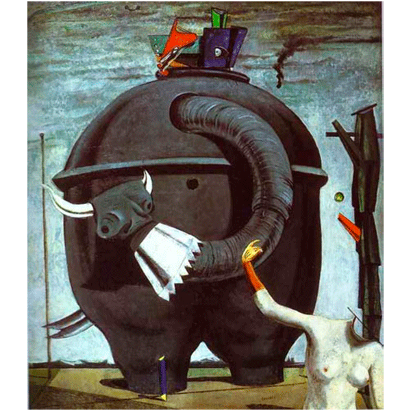
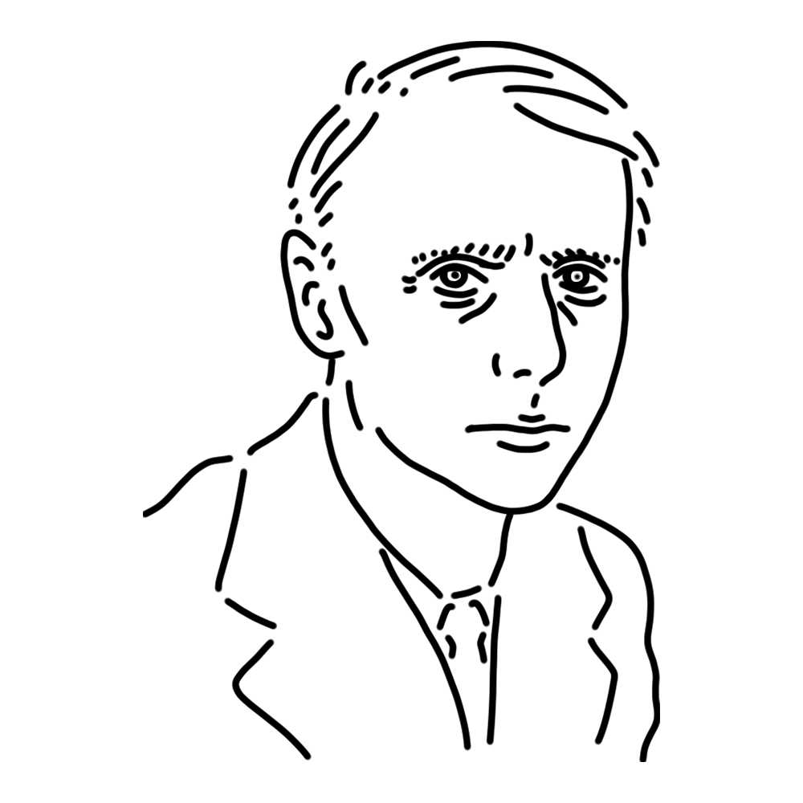

A German-born muse who moved from Dadaism to Surrealism. She created fantastical works based on her own mystical experiences. Though she is a bird-woman, she cannot fly for very long due to a chronic condition that causes dizziness. She is exceptionally beautiful and is often the object of romantic affection.
German Empire
"The Elephant Celebes"
"Two Children Are Threatened by a Nightingale"
"The Hundred Headless Woman" etc.

A huge, metal-like structure stands beneath a gray sky. Judging from the title, it is likely an elephant, wagging its horned trunk at the nude female figure in the foreground.
This painting was painted in 1921. The artist's experiences as a soldier in World War I and witnessing modern warfare with weapons are surely not unrelated to the creation of this painting.
Year
1921
Medium
Oil on canvas
Dimension
125.4 cm x 107.9 cm
Collection
Tate Modern (UK)

A German-born painter who developed Surrealism through Dadaism.
He favored themes of the unconscious, the world of dreams, and absurd events, developing techniques like “frottage” and ‘glacis’ that produced mysterious patterns during their expression. He also devoted himself to “collage,” creating new forms by pasting magazine clippings and other materials, crafting bizarre creatures and fantastical narratives.
His childhood experiences fostered an obsession with birds, which frequently appear as motifs in his works.
Maximilian Maria Ernst
April 2, 1891
April 1, 1976(aged 84)